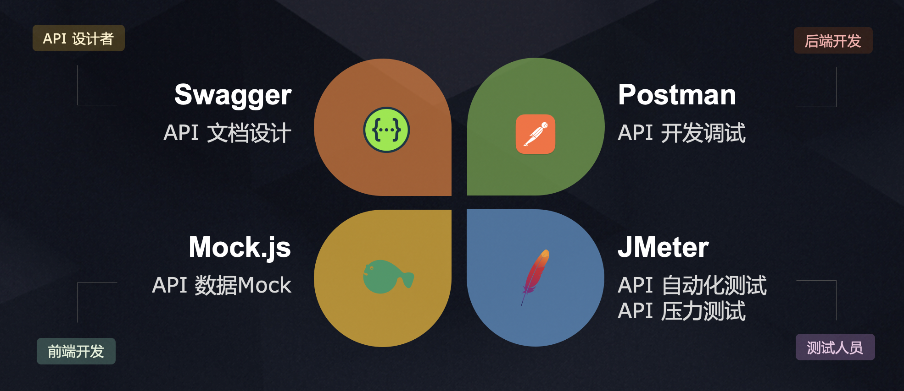
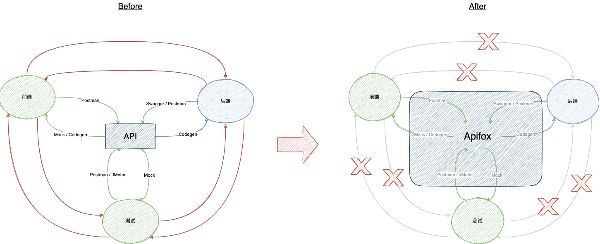
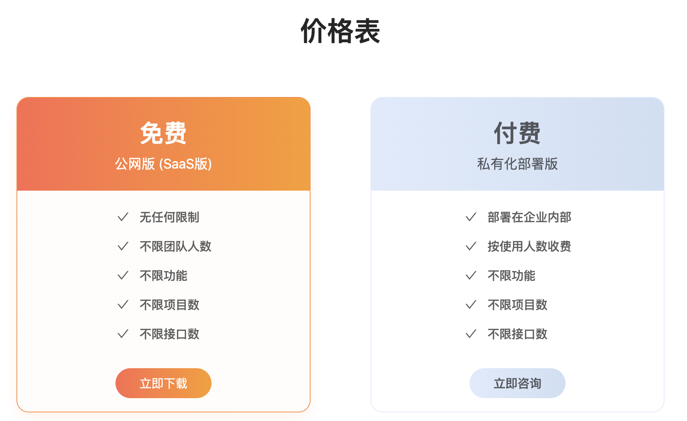

<!DOCTYPE HTML>
<html>
<head><meta name="generator" content="Hexo 3.9.0">
  <meta charset="utf-8">
  <meta http-equiv="X-UA-Compatible" content="IE=edge">
  <meta name="apple-mobile-web-app-capable" content="yes">
  <meta name="apple-mobile-web-app-status-bar-style" content="black">
  <meta name="google-site-verification" content>
  
  <title>不仅仅是一把瑞士军刀 —— Apifox的野望和不足</title>
  <meta name="author" content="Emac">
   <meta name="description" content="声明：本文内容不涉及任何 Apifox 的功能介绍，一来网上这方面的文章已经汗牛充栋，二来 Apifox 本身的用户体验做的非常好，对于开发者而言学习成本基本为零。

阮一峰：不管你是前端开发还是后端开发，只要项目是服务架构，它可能会大大提升你的开发效率。
虫师：我们很难把它描述为一款接口管理工具或">
  

  <meta property="og:title" content="不仅仅是一把瑞士军刀 —— Apifox的野望和不足">
  <meta name="viewport" content="width=device-width, initial-scale=1, maximum-scale=1">
  <meta property="og:site_name" content="Emac">
 <meta property="og:image" content="undefined">
  
  <link href="/apple-touch-icon-precomposed.png" sizes="180x180" rel="apple-touch-icon-precomposed">
  <link rel="alternate" href="/atom.xml" title="Emac" type="application/atom+xml">
  <link rel="stylesheet" href="//cdn.bootcss.com/bootstrap/3.3.6/css/bootstrap.min.css">
  <link rel="stylesheet" href="//cdn.bootcss.com/font-awesome/4.5.0/css/font-awesome.min.css">
  <link rel="stylesheet" href="/css/m.min.css">
  <link rel="icon" type="image/x-icon" href="/favicon.ico">
</head>
</html>
<body>
  <div id='wx_pic' style='display:none;'></div>
  <div id="main">
    <div class="behind">
      <div class="back">
        <a href="/" class="black-color"><i class="fa fa-times" aria-hidden="true"></i></a>
      </div>
      <div class="description">
        &nbsp;拾贝
      </div>
    </div>
    <div class="container">
      

  <article class="standard post">
    <div class="title">
      
  
    <h1 class="page-title center">
        不仅仅是一把瑞士军刀 —— Apifox的野望和不足
    </h1>
  


    </div>
    <div class="meta center">
      
<time datetime="2022-03-12T16:00:00.000Z">
  <i class="fa fa-calendar"></i>&nbsp;
  2022-03-13
</time>


    
    &nbsp;
    <i class="fa fa-tag"></i>&nbsp;
    <a href="/categories/arch/">arch</a>


    
    &nbsp;
    <i class="fa fa-tag"></i>&nbsp;
    <a href="/tags/原创-API/">原创,API</a>


    </div>
    <hr>
    <div class="picture-container">
      
    </div>
    <p>声明：本文内容不涉及任何 Apifox 的功能介绍，一来网上这方面的文章已经汗牛充栋，二来 Apifox 本身的用户体验做的非常好，对于开发者而言学习成本基本为零。</p>
<blockquote>
<p>阮一峰：不管你是前端开发还是后端开发，只要项目是服务架构，它可能会大大提升你的开发效率。</p>
<p>虫师：我们很难把它描述为一款接口管理工具或接口自动化测试工具，它增强了团队协作能力，这对一个研发团队而言很重要。</p>
<p>池建强：Apifox，这是一代更比一代强。</p>
</blockquote>
<h2 id="什么是Apifox？"><a href="#什么是Apifox？" class="headerlink" title="什么是Apifox？"></a>什么是Apifox？</h2><p>看了一众大咖们对 <a href="https://www.apifox.cn/" target="_blank" rel="noopener">Apifox</a> 赞不绝口，你可能会好奇 Apifox 究竟是何方神圣？根据<a href="https://www.apifox.cn/help/app/introduce/" target="_blank" rel="noopener">官方定义</a>，Apifox 是 API 文档、API 调试、API Mock、API 自动化测试一体化协作平台，定位 Postman + Swagger + Mock + JMeter。如果你也曾使用过 Apifox，相信你会深表赞同。</p>
<p></p>
<p>那么问题来了，在盛行小而美的 API 工具的当下，为什么会横空出世一个“瑞士军刀”般存在的 Apifox？答案就在 Apifox 的宗旨里面：节省研发团队的每一分钟。</p>
<p>在 Apifox 之前，为了达成对 API 语义的理解和实现上的一致性，前端、后端、测试使出十八般武艺，定义 API 用 Swagger，生成文档用  YAPI，前端自测用 Mock，接口测试用 Postman，性能测试用 JMeter，各类配置、数据、链接满天飞，重要的事情说三遍啊说三遍。有了 Apifox 之后，前端、后端、测试之间原本去中心化的 P2P 通讯方式变成以 Apifox 为中心的星型通讯方式，通讯对象从原本充满不确定性的人，变成稳定可靠的平台，各类配置、数据、链接也有了统一管理的地方，团队通讯成本和 API 管理成本大幅降低。</p>
<p></p>
<h2 id="Apifox的野望"><a href="#Apifox的野望" class="headerlink" title="Apifox的野望"></a>Apifox的野望</h2><p>如果你认为一体化协作平台就是 Apifox 的一切，那你可能低估了 Apifox 的野心。</p>
<p>先来看下 Apifox 的收费模式，</p>
<p></p>
<p>是的，你没有看错，免费版即享“无任何限制”，不限团队人数、不限功能、不限项目数、不限接口数，如此奢华的免费套餐，放眼全网也很难找到第二家（SaaS 平台）。</p>
<p>再来看下<a href="https://www.apifox.cn/help/app/changelog/" target="_blank" rel="noopener">更新日志</a>，留意以下更新：</p>
<ol>
<li>[2021-03-14] 1.2.0 新增【在线分享接口文档】功能。</li>
<li>[2021-10-29] 1.4.10 上线 API Hub功能。1）通过API Hub查找/发现他人公开的 API 项目。2）可将项目发布到API Hub（设置为公开项目即可），允许任何人通过API Hub访问、克隆该项目。</li>
<li>[2022-01-11] 1.4.17 公开项目支持通过 web 访问、运行。</li>
</ol>
<p>看懂了吗？<a href="https://www.apifox.cn/apihub/" target="_blank" rel="noopener">API Hub</a> 才是 Apifox 真正的野望，打造开放 API 共享平台，连接各类企业级 API，加速企业商业创新，成为企业之间的“交友”平台。有了 API Hub，企业之间谈合作，见面第一句话就是：PPT is cheap, show me the API!</p>
<h2 id="Apifox的不足"><a href="#Apifox的不足" class="headerlink" title="Apifox的不足"></a>Apifox的不足</h2><p>要配得上如此宏大的野心，在我看来，Apifox 无论是架构上还是产品功能上都还有很长的路要走。</p>
<p>从架构上来看，首先要做的是提升项目中模型的地位。创建完一个新项目，首先应该定义模型，然后才是接口。我们知道，模型是一个软件的骨架，是一个系统的核心。接口是系统外在能力的呈现，模型是系统内在逻辑的载体。一旦脱离了模型，接口就是无源之水，无本之木。</p>
<p>其次，作为接口的诞生地，Apifox 不妨制定或者倡导一些好的 API 设计规约，像 <a href="https://google.aip.dev/general" target="_blank" rel="noopener">Google AIP (API Improvements Proposal)</a>，<a href="https://docs.microsoft.com/en-us/azure/architecture/best-practices/api-design" target="_blank" rel="noopener">Microsoft RESTFul API Design</a>等。</p>
<p>从产品功能来看，不要局限于 Postman + Swagger + Mock + JMeter 这句 Slogan，以用户为中心，添加诸如一键生成单元测试代码、自动化测试源码编辑模式等实用功能，解决更多实际 API 开发过程中的痛点。</p>
<p>除此之外，官方资料中似乎没有看到大规模团队协作的案例，无论是SaaS版本还是私有化部署版本，平台所能支持的团队体量大小暂时未知。</p>
<h2 id="展望"><a href="#展望" class="headerlink" title="展望"></a>展望</h2><p>借微服务之东风，Apifox 自 2020 年 12 月 28 日推出 1.0 版本以来，以其独特的集成优势、优秀的用户体验，在国内IT界一时风光无两。不过在国外，似乎知者寥寥，stackoverflow 上甚至查无此人。随着今年 2 月份 2.0 英文版的推出，相信很快会吸引众多国外开发者的目光，祝愿 Apifox 走出国门，走向世界，早日成为国产软件之光！</p>
<h2 id="参考"><a href="#参考" class="headerlink" title="参考"></a>参考</h2><ul>
<li><a href="https://www.apifox.cn/help/#_20-%E5%88%86%E9%92%9F%E5%AD%A6%E4%BC%9A-apifox-%F0%9F%91%8D" target="_blank" rel="noopener">20 分钟学会 Apifox</a></li>
<li><a href="https://www.apifox.cn/help/app/introduce/" target="_blank" rel="noopener">Apifox 介绍</a></li>
<li><a href="https://www.infoq.com/articles/API-Design-Joshua-Bloch/" target="_blank" rel="noopener">Joshua Bloch: Bumper-Sticker API Design</a></li>
<li><a href="https://mp.weixin.qq.com/s/qWrSyzJ54YEw8sLCxAEKlA" target="_blank" rel="noopener">深度 | API 设计最佳实践的思考</a></li>
</ul>


  </article>
  </script>


    </div>
  </div>
  <footer class="page-footer"><div class="clearfix">
</div>
<div class="right-foot container">
    <div class="firstrow">
        <a href="#top" >
        <i class="fa fa-arrow-right"></i>
        </a>
        © emacoo.cn 2015-2022
    </div>
    <div class="secondrow">
        <a href="https://github.com/gaoryrt/hexo-theme-pln">
        
        </a>
    </div>
</div>
<div class="clearfix">
</div>
<script async src="//busuanzi.ibruce.info/busuanzi/2.3/busuanzi.pure.mini.js"></script>
<div class="busuanzi center">
    <span id="busuanzi_container_site_pv">本站总访问量<span id="busuanzi_value_site_pv"></span>次</span>
    <span id="busuanzi_container_site_uv">本站访客数<span id="busuanzi_value_site_uv"></span>人次</span>
    <span id="busuanzi_container_page_pv">
      本文总阅读量<span id="busuanzi_value_page_pv"></span>次
    </span>
</div>
</footer>
  <script src="//cdn.bootcss.com/jquery/2.2.1/jquery.min.js"></script>
<script src="/js/search.js"></script>
<script type="text/javascript">

// comments below to disable loading animation
function revealOnScroll() {
  var scrolled = $(window).scrollTop();
  $(".excerpt, .index-title, .index-meta, p").each(function() {
    var current = $(this),
      height = $(window).outerHeight(),
      offsetTop = current.offset().top;
    (scrolled + height + 50 > offsetTop) ? current.addClass("animation"):'';
  });
}
$(window).on("scroll", revealOnScroll);
$(document).ready(revealOnScroll)

// disqus scripts


// dropdown scripts
$(".dropdown").click(function(event) {
  var current = $(this);
  event.stopPropagation();
  $(current).children(".dropdown-content")[($(current).children(".dropdown-content").hasClass("open"))?'removeClass':'addClass']("open")
});
$(document).click(function(){
    $(".dropdown-content").removeClass("open");
})

// back to top scripts
$("a[href='#top']").click(function() {
  $("html, body").animate({ scrollTop: 0 }, 500);
  return false;
});


var path = "/search.xml";
searchFunc(path, 'local-search-input', 'local-search-result');

</script>

</body>
</html>
